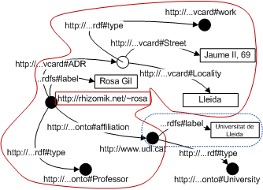

Rhizomer gives support to 7 typical tasks of Semantic Web end-users. Here, end-users stand for users with no or limited knowledge about the Semantic Web. Particularly, we don't include domain experts, which might neither have knowledge about the Semantic Web but whose main task is to work with ontologies. The end-user tasks supported by Rhizomer are:
With Rhizomer, users can perform semantic queries without any knowledge of semantic query languages. All that they need to know is to fill query forms. These forms are generated dynamically from the kind of resource they are interested in, more concretely from the properties specific for that kind of resource. Moreover, users can add other properties that without being specific, might also apply to resources of that kind. Each property corresponds to a form input that the user can fill in order to retrieve all resources with that property valued with the input filler.
[Work in progress] Alternatively, the criteria for form generation might be to select those properties more frequently used in order to describe resources of the kind selected by the user. Or, in the case of a query for any kind of resource, those properties more commonly used.
For advanced users, there is also a query form that makes it possible to pose queries based on the semantic query language SPARQL, the Admin Query Form.
Query results are those resources satisfying the search criteria. However, result pages show more information than just the identifiers of the retrieved resources. In order to provide more context to the user, each resource is presented together with its description. The user does not face these descriptions as raw data, the user is presented an HTML rendering of the descriptions where all identifiers are substituted by human-readable labels.
| Rosa Gil Iranzo a AssociateProfessor | |||||||
|---|---|---|---|---|---|---|---|
| Address |
|
||||||
| affiliation | Universitat de Lleida | ||||||
| label | Rosa Gil | ||||||
Fig. 1. HTML rendering of the description shown in Fig. 1
Users can also explore the descriptions of the resources managed by Rhizomer navigating through the links that connect them. In practice, Rhizomer becomes a Semantic Web browser, which can even carry the user from descriptions stored in Rhizomer to the Web of Linked Data. This makes it possible to reuse descriptions from DBPedia, e.g. a description of Semantic_Web.
The Semantic Web is the web of data, compared to the Web that is the web of documents. Consequently, it is not possible to browse it by jumping from document to document following links. The Semantic Web is a Giant Global Graph that must be broken down into manageable pieces that constitute the browsing steps.
The Rhizomer approach similar to Concise Bounded Descriptions (CBD). A CBD is a portion of the graph that includes the resource the user is currently browsing together with all its properties, their values and all the descriptions for those resources that do not have an identifier and depend on this one in order to be identified, called anonymous resources. CBDs are augmented with all the available labels for the involved resources, see Fig. 2. These labels are used in order to produce a more usable HTML rendering of the data.

Fig 2. Diagram showing the browsing fragment for the resource "http://rhizomik.net/~rosa" based on a CBD
plus the available labels for all the involved resources, in this case "Universitat de Lleida"
From a resource description, it is possible to browse the descriptions of all the resources linked from it. In order to facilitate browsing and avoid the restriction imposed by the fact that links are unidirectional, It is also possible to browse the descriptions of all the resources that link to the current resource, the "referrers".
Another browsing help is that Rhizomer keeps track of the browsing steps so it is possible to use the "back" and "forward" browser buttons. Browsing steps are cached at the browser in order to improve responsiveness.
Finally, advanced users have access to a special page that makes it possible to retrieve all the stored descriptions, the Dump admin page.
With Rhizomer it is possible to add new descriptions, to edit existing ones and to delete them using web forms. From any description, an HTML form can be dynamically generated with one input field for each property. When editing, each input field is preloaded with the current property value, which can be edited or erased in order to edit the description. It is also possible to add new properties following a similar approach to that used to dynamically build a search form, see the Search task description.
It is also possible to create a new description for a resource starting from zero. In this case, the users starts by characterising the kind of thing that resource is. Then, the same approach in order to select new properties for that resource is followed. Each new property becomes an input field that the user can fill in order to provide a value for that property.
For advanced users, it is possible to load a bunch of descriptions serialised in different formats using the Load admin form.
A mashup in the Rhizomer context is when the user merges different descriptions, which might refer to the same resources or not. When merging different resources the objective will usually be to show the aggregation in conjunction in the form of maps or timelines. When mixing two or more pieces of metadata about common resources, the common objective will be to obtain new descriptions that aggregate the available data for each resource.
It is also possible, for advanced users, to use Construct SPARQL queries in order to perform customised mashup through the Construct admin page.
Rhizomer can be used in order to upload content and make it available online, for instance documents, images, videos, etc. A especial case are HTML pages, which can be edited using a WYSIWYG editor and created following a wiki-style, i.e. type the URL of the new page in order to create it. The WYSIWYG editor (currently FCKEditor) features an uploader that facilitates managing content.
We are also working in a plugin infrastructure, with plugins specialised on specific content types, that will help users produce semantic annotations for the pieces of content they upload to Rhizomer.
The objective of this task is to establish semantic mappings among classes and properties from different ontologies that can then help driving data mashup. The mappings are defined using the same semantic metadata edition features than in the Annotate task. The user edits one of the involved classes or properties description and defines the appropriate relation that captures the semantics of the mapping and points to the other class or property.
It is also possible, for advanced users, to bulk-load their mappings using the Load admin form.
It is possible to associate resources (depending on their kind or properties) to web services responsible for performing actions outside Rhizomer boundaries. This web services are dynamically integrated with Rhizomer based on their semantic descriptions. Once the description is loaded, the service is associated to all resources of the type defined as the service input. The service will get the resource RDF description as input and Rhizomer will be prepared to process the kind of output defined in the service description.
Generically, this kind of tasks are called Transact and common examples are user tasks that have effects outside the boundaries of information systems. For instance, to buy a book or to transfer money between bank accounts. From the point of view of Rhizomer, the range of tasks that might be considered a Transact is much more wider as long as they involve services outside Rhizomer. For instance, to show resources in a map using Google Maps or to play a song using an online player.
However, some of this services might also give support to any other of the tasks previously introduces, apart from being a Transact from the point of view of Rhizomer as a system. As the focus is placed on tasks from the point of view of the user, Transacts should be analysed on a case by case basis and characterised as one of the previous tasks if it is possible.
Currently these are the available services in Rhizomer:
Planned services: